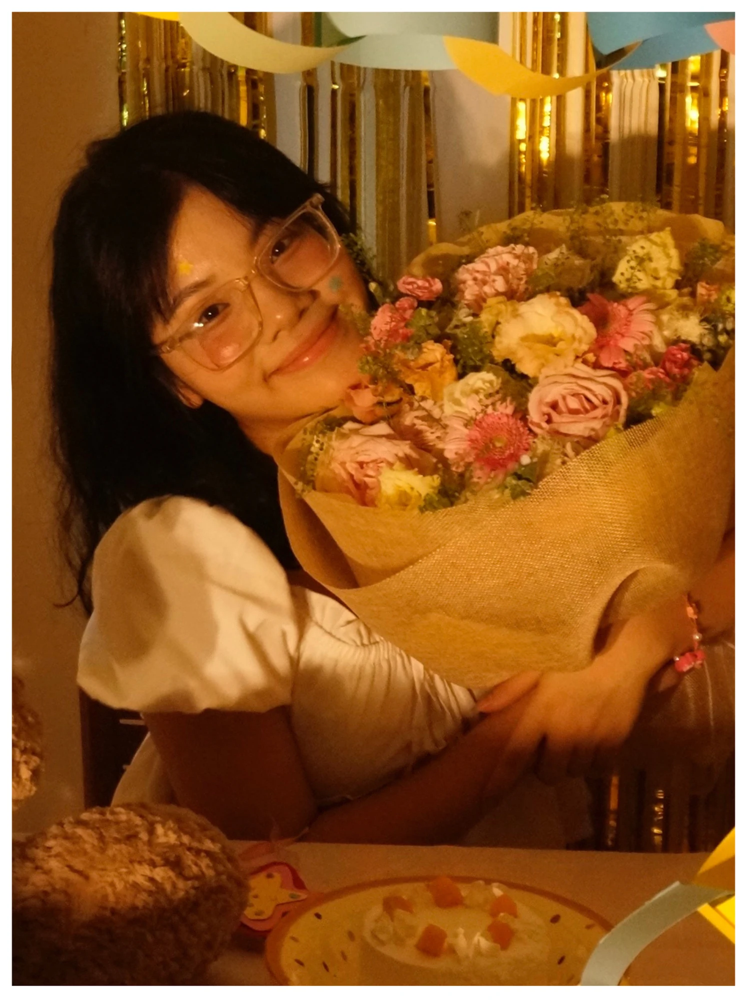

Mon portfolio numérique
Mỗi bài học
là một điểm sáng.
Mình là Lê Hương Liên — sinh viên năm nhất ngành Ngôn ngữ & Văn hoá Pháp. Đây là hành trình mình khám phá công nghệ số, AI và cách học chủ động hơn.
Creative constellation
Giới thiệu

Bonjour, mình là Liên.
Mình học ngôn ngữ, nhưng cũng muốn hiểu cách công nghệ đang thay đổi việc học.
Hiện mình là sinh viên năm nhất khoa Ngôn ngữ và Văn hoá Pháp, Trường Đại học Ngoại ngữ — Đại học Quốc gia Hà Nội. Portfolio này ghi lại sáu bài thực hành từ kỹ năng quản lý tệp, tìm kiếm học thuật đến sử dụng AI sáng tạo và có trách nhiệm.
- Họ và tên
- Lê Hương Liên
- Mã sinh viên
- 25041410
- Lớp học phần
- VNU1001_E252053
- Chuyên ngành
- NN&VH Pháp · ULIS
Bài tập
Learning constellation
Sáu điểm sáng trong hành trình học tập số
Mỗi bài được trình bày thành một trang riêng; nội dung, bảng biểu và ảnh minh chứng đi đúng theo thứ tự của báo cáo gốc.
Bài tập 1
Thao tác cơ bản với tệp tin và thư mục
Nền tảng quản lý dữ liệu cá nhân trên Windows.Bài tập 2
Tìm kiếm và đánh giá thông tin học thuật
Đánh giá 10 nguồn về ChatGPT trong học ngoại ngữ.Bài tập 3
Viết prompt hiệu quả cho các tác vụ học tập
Thử nghiệm ba cấp độ prompt và so sánh đầu ra.Bài tập 4
Sử dụng công cụ hợp tác trực tuyến
Trello, Google Docs, Google Drive và Discord trong dự án nhóm.Bài tập 5
Sử dụng AI tạo sinh để sáng tạo nội dung
Kết hợp ChatGPT, DALL·E và Canva AI.Bài tập 6
Sử dụng AI có trách nhiệm trong học tập
Đạo đức học thuật, minh bạch và bộ nguyên tắc cá nhân.Tổng kết
Công nghệ chỉ thực sự có ý nghĩa khi mình biết dùng nó để học tốt hơn.
Qua sáu bài tập, mình không chỉ làm quen với các công cụ số mà còn học cách đánh giá nguồn tin, viết yêu cầu rõ ràng, phối hợp nhóm và kiểm soát chất lượng đầu ra của AI.
Điều quan trọng nhất mình rút ra là: AI nên đóng vai trò trợ lý. Tư duy phản biện, sự minh bạch và trách nhiệm với sản phẩm cuối cùng vẫn thuộc về người học.
Bắt đầu từ bài 1